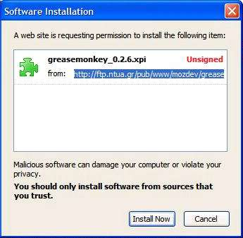

![[link]](../images/permalink.gif "link to this section") 1.2. Installing Greasemonkey
1.2. Installing Greasemonkey
To start writing user scripts, you first need to install the Greasemonkey browser extension, version 0.3 or later.
Procedure: Install the Greasemonkey extension
-
Visit the Greasemonkey home page.
-
Click the link titled “Install Greasemonkey”.
-
Firefox will indicate (probably at the top of your browser window) that it prevented the site from installing software. Click Edit options... to bring up the “Allowed Sites” dialog, then click Allow to add the Greasemonkey site to your list of sites that are allowed to install software. Click OK to close the “Allowed Sites” dialog.
-
Once again, click the link titled “Install Greasemonkey”.
-
Now an install dialog should pop up to confirm that you really want to install. Wait a few seconds for the install button to enable, then click Install now.
 -
Restart your browser.
Once you restart your browser, select the Tools menu. You should see three new menu items: Install User Script..., Manage User Scripts..., and User Script Commands. Only Manage User Scripts... will be enabled, but that's OK. The others only become enabled under special circumstances.
By default, installing Greasemonkey does not add any functionality to your browser (other than those three menu items). All it does it enable you to install additional items, called “user scripts”, which customize specific web pages.